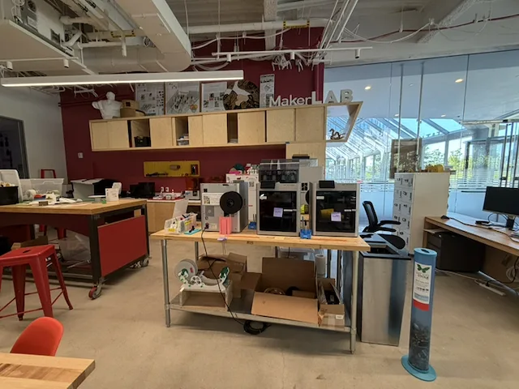
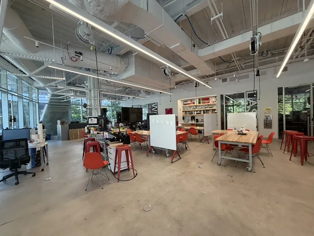

ISAM 2026 · Live demo
 AI
AI
AI to help operate, fix and build in makerspaces.
Every answer cites the manual page. Ask about any machine in the Cornell Tech MakerLAB.
Operate
Ask how to run any machine in our lab, step by step.
Try asking
“How do I load filament on the Prusa i3 MK3S+?”
Fix
Something went wrong? Find out what to check.
Try asking
“Why won’t my Form 4 print stick?”
Build
Plan a project with the tools the lab has.
Try asking
“Which machines could I use to make a lamp?”



Scan to try it now
www.makerlabai.app
For makerspaces
Bring MakerLAB AI to your makerspace
Sign up and we’ll be in touch.
makerlabai.app/demo